TOOLS
Table of Contents
- 1. Tools
- 1.1. keys lead by space in spacemacs
- 1.1.1.
ggit/version control - 1.1.2.
iinsert - 1.1.3.
jjump/join/split - 1.1.4.
klisp - 1.1.5.
llayout transient state - 1.1.6.
mmajor mode command - 1.1.7.
nnarror/numbers - 1.1.8.
oprefix for org - 1.1.9.
pprojectile - 1.1.10.
Prun pandoc - 1.1.11.
qquit - 1.1.12.
r - 1.1.13.
Sspell - 1.1.14.
ssearch - 1.1.15.
ttoggles - 1.1.16.
TUI toggles/themes - 1.1.17.
vexpand region - 1.1.18.
wwindows - 1.1.19.
xtext - 1.1.20.
zzoom
- 1.1.1.
- 1.2. Link in Emacs Org Mode
- 1.3. write and evaluate python code in Org mode
- 1.1. keys lead by space in spacemacs
- 2. Emacs
- 2.1. Blogging with Emacs Org
- 2.2. Organize you life in Emacs Org
- 2.3. Using Emacs as a calculator through Cals
- 2.4. Write in Emacs
- 2.5. Version Control Using Magit in Spacemacs
- 2.6. Journal your life Using Emacs Org
- 2.7. Take a Diary Using Emacs Org
- 2.8. Extends Emacs Org Mode on iOS Device
- 2.9. Repeated Tasks in Emacs Org
- 3. Git
1 Tools
1.1 keys lead by space in spacemacs
Inspired by Eivind Fonn's spacemacs tutorial on Youtube, I think it is
desirable to go through the keystroke leading with spc by myself.
Actually, by doing this I learn quite more about spacemacs and improve
my productivity on using it. I also find that several expensive short
keystrokes are not being used and several expensive shortcuts are
assigned to commands that I rarely knocked.
All the keys in the following section are lead by spc.
1.1.1 g git/version control
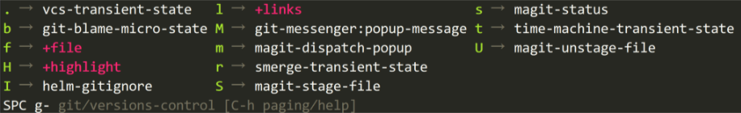
Figure 1: spc g
| key | brief | comments |
|---|---|---|
. |
||
b |
git blame moicro state | I seldomly use blame |
f h |
magit log buffile file | useful to check the log of current file |
H c |
clear | |
H h |
highlight by age of changes | |
H t |
highlith by last time of update | |
I |
helm git ignore | |
l C |
git link commit copy url only | |
l c |
git link commit copy | |
l L |
git link copy url only | |
l l |
git link copy | |
1.1.2 i insert
| key | brief | comments |
|---|---|---|
J |
insert line below no indent | |
j |
insert line below | |
K |
insert line above no indent | |
k |
insert line above |
I need to add more keys under spc i . This key prefix havs no so many
followers.
1.1.3 j jump/join/split
| key | brief | comments |
|---|---|---|
$ |
push mark and go to end of line | |
0 |
push mark and go to beginning of line | |
| = | indent region or buffer | |
b |
avy mark pop | |
D |
dired jump other window | |
d |
dired jump | |
f |
find function | |
I |
helm imenu in all buffers | |
i |
helm jump in buffer | |
J |
avy go to 2chars | |
j |
avy go to char | |
k |
goto next line and indent | |
l |
avy goto line | current buffer |
n |
sp new line | split current line |
o |
open line above | |
q |
dumb jump quick look | never use it |
S |
split and new line | same as spc j n |
s |
split sexp | |
u |
avy goto url | |
v |
find variables | |
w |
avy goto word |
1.1.4 k lisp
1.1.5 l layout transient state
1.1.6 m major mode command
1.1.7 n narror/numbers
1.1.8 o prefix for org
1.1.9 p projectile
1.1.10 P run pandoc
I'd like delete this command
1.1.11 q quit
1.1.12 r
I like helm-mark-ring and helm-yank-ring
1.1.13 S spell
1.1.14 s search
1.1.15 t toggles
| keys | brief | comments |
|---|---|---|
tab |
tab indent guide globally | not clear |
- |
centered point | |
8 |
highlight long lines | |
a |
auto completion |
1.1.16 T UI toggles/themes
1.1.17 v expand region
1.1.18 w windows
1.1.19 x text
1.1.20 z zoom
1.2 Link in Emacs Org Mode
Today, I am going to write something about link in Emacs Org mode. I have to admit in advance that I don't know all about Org's link. However, the part I know about Org link has already made my life much more efficient.
1.3 write and evaluate python code in Org mode
1.3.1 set the command for evaluating the python code
(setq org-babel-python-command "python3")
1.3.2 delete the *.elc files
After org mode version 9, it is buggy to evaluate python code in Org mode and the error message is :
Evaluation of this python code is disabled
After some google, I find the solution at here . The solution is easy: deleting the .elc files under the .emacs.d/elpa/org-plus-contrib-XXXXXX/ directory.
1.3.3 export with the result
Take the following code snippet for example.
1: cars = 100 2: space_in_a_car = 4 3: drivers = 30 4: passengers = 90 5: cars_not_driven = cars - drivers 6: cars_driven = drivers 7: carpool_capacity = cars_driven * space_in_a_car 8: average_passengers_per_car = passengers / cars_driven 9: 10: print("There are",cars,"cars available.") 11: print("There are only",drivers,"drivers avaiable.") 12: print("There will be", cars_not_driven,"empty cars today.") 13: print("We can transport",carpool_capacity,"people today.") 14: print("We have",passengers,"to carpool today.") 15: print("We need to put ablout",average_passengers_per_car,"in each car")
After the above debugging and config, you can evalute the code snippet using
C-c C-c inside the code. and after that the result will appear below the code
as:
#+RESULTS: : There are 100 cars available. : There are only 30 drivers avaiable. : There will be 70 empty cars today. : We can transport 120 people today. : We have 90 to carpool today. : We need to put ablout 3.0 in each car
However, when I call the org export dispatcher using C-c C-e h o . The result
part is not displayed as the code snippet does.
2 Emacs
2.1 Blogging with Emacs Org
Right Now, I use two blog systems to post articles. First, I use the Emacs built-in Org to record my learning on math, computer and wireless communication. For me, the built-in publishing system is obsolete (I am not saying Org is obsolete. My life rely heavily on Org.) because I find the second one is more interesting and flexible to config. The second one is Hugo. Naturally, the Hugo support markdown format. However, I want to use Emacs Org to maintain a tools consistency. Fortunately, there is ox-hugo, a project bridging Emacs org and Hugo markdown. Ox-hugo allows you to write your blog using Emacs Org then publish them in the markdwon format automatically.
2.1.1 Writing with Emacs Org publish
It's easy to build a static website using Emacs Org. Worg, the Org-mode community, also have comprehensive tutorials about using Org to build your own static site. To be honest, worg should be every serious Org users' starting point. So many Org experts contribute their summary of Org in high-quality articles on the Worg.
In general, through Emacs Org mode, all you need is to set the variable
org-publish-project-alist . Of course, if you want your site beautiful,
some knowledge about CSS and JavaScript is necessary.
2.1.2 Writing with Hugo
Now, I moved from the Emacs built-in publishing system to Hugo because of Hugo's efficiency and flexibility. You can build your static site in just a few minutues. One major problem of the built-in publishing system is that you have to wait for a long time as your site gets larger and larger. When you have only several posts, there is no problem. However, when you have more than one hundred posts, you want to kill yourself during waiting the publishing.
Using Hugo, everything is easy. Post an article is at the fingure.However, if you want to write a post, it is prioritized to finished it in the github format markdown. For a guy who rarely use markdown and is familiar with Emacs Org, this constraint is not human. Fortunately, Ox-hugo, a carefuly crafted Org exporter backend for Hugo, is definitely worth a try. Ox-hugo bridge the Emacs Org and Hugo and make the workflow at a fly. Even though, Hugo supports to write the posts in Org format, Ox-hugo still is a sharp tool which I will not give up and highly recommend it.
Especially, there is tons of themes for you. Also, you can set up your own theme.
- architecture of the site
Using
hugo, there is a default architecture. Usingox-hugo, I store the Org file in the subdirectorycontent-org. There are several sections for my static site suchmath,computerandcommunication. I store the articles in the corresponding category. For example I will put an article on mathematical analysis in the file namedcontent-org/math.orgso that after exporting, the markdown file will be put in the subdirectorycontent/math/.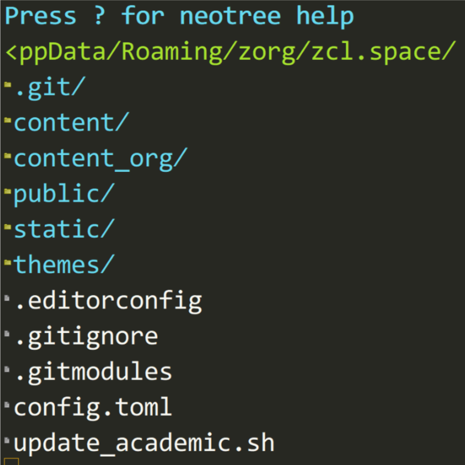
Figure 2: architecture of Hugo project
2.1.3 Settings for ox-hugo
- settings for each section based on ox-hugo
As mentioned before, there are several sections for my site and I use ox-hugo to handle articles for this sections. In the subdirectory
content-org/, there are several*.orgfiles such asmath.org,computer.org,communications.organdtools.org. All these.orgfiles have multiple level-1 headlines. for each level-1 headline, there is one article. I use one-post-per-Org-subtree style preferred in the ox-hugo document but one-section-per-Org-file style for each section. The one-section-per-Org-file style is kind of like one-post-per-Org-file mentioned in the ox-hugo document. So I have a hybrid style.For each section, I have to set some parameters properly so that the articles goes to the right postion. Take
math.orgfor example, the beginning of this file is like:#+HUGO_BASE_DIR: ../ #+HUGO_SECTION: math #+SEQ_TODO: TODO NEXT DRAFT DONE #+FILETAGS: math #+OPTIONS: *:t <:nil timestamp:nil toc:t #+HUGO_AUTO_SET_LASTMOD: t
- the first line tells
ox-hugothe targeting directory is../content/. - the second line tells
ox-hugothe article goes to../content/math. - the third line is the Org state of the article,
TODOwill render the article a draft whileDONEa finished post. - the fourth line will tell the Org all the headlines of this file has the
tag
math - at the fifth line.
*:twill toggle emphasized text.<:nilmeans the timestamp will not be exported.timestamp:nilmeans the creation time will not be exported.toc:tmeans for the articles table of content is generated. More settings like these will be detailed in theOrgmanual. (You can open the Org manual byC-h i,then seclect the Org section.) On table of contents, ox-hugo has an article. - the sixth line tells ox-hugo to export the latest time when the article is modified.
- the first line tells
- settings for each article based on ox-hugo
I use the
org-captureto start a article. The emacs-lisp:(setq org-capture-templates '( ("t" "todo" entry (file "~/zorg/Dropbox/base/zrefile.org") "* TODO %? :TODO: \n Added:%T\n" :clock-in t :clock-resume t) ("h" "Hugo post") ("hm" "Math" entry (file+olp "~/zorg/zcl.space/content_org/math.org" "Math") (function org-hugo-new-subtree-post-capture-template) ":math:" :clock-in t :clock-resume t) ("hc" "Computer" entry (file+olp "~/zorg/zcl.space/content_org/computer.org" "Computer") (function org-hugo-new-subtree-post-capture-template) :clock-in t :clock-resume t) ("ht" "Telecommunication" entry (file+olp "~/zorg/zcl.space/content_org/telecommunication.org" "Telecommunication") (function org-hugo-new-subtree-post-capture-template) :clock-in t :clock-resume t) ("hl" "Life" entry (file+olp "~/zorg/zcl.space/content_org/life.org" "Life") (function org-hugo-new-subtree-post-capture-template) :clock-in t :clock-resume t) ("ho" "Tools" entry (file+olp "~/zorg/zcl.space/content_org/tools.org" "Tools") (function org-hugo-new-subtree-post-capture-template) :clock-in t :clock-resume t) ))
From the above code, you can see that I rely heavily on ox-hugo. there is one function named
org-hugo-new-subtree-post-capture-templatewhich is shown as below:(defun org-hugo-new-subtree-post-capture-template () "Returns `org-capture' template string for new Hugo post. See `org-capture-templates' for more information." (let* (;; http://www.holgerschurig.de/en/emacs-blog-from-org-to-hugo/ (date (format-time-string (org-time-stamp-format :inactive) (org-current-time))) (title (read-from-minibuffer "Post Title: ")) ;Prompt to enter the post title (fname (org-hugo-slug title))) (mapconcat #'identity `( ,(concat "* TODO " title) ":PROPERTIES:" ,(concat ":EXPORT_FILE_NAME: " fname) ,(concat ":EXPORT_DATE: " date) ;Enter current date and time ,(concat ":EXPORT_HUGO_CUSTOM_FRONT_MATTER+: " ":summary \"summary\"") ":END:" "%?\n") ;Place the cursor here finally "\n")))
One more point, it is awesome to preview each article after saving it. Yes! you can do it according this article.
2.1.4 Settings for Hugo themes
Now, there are more than 190+ themes for Hugo. It is pretty straightforward to install and config a theme as you wish. I prefer the Academic theme which I adopt for the following reasons:
- It is easy manage my post according to different categories.
- I love the widget most.
- support of \(\mathrm{\LaTeX}\) so I can with the mathematical expressions fluently.
- Responsive and mobile friendly.
easy to update.
There are several ways to install the Academic theme. I use the Academic Kickstart way:
git clone https://github.com/sourcethemes/academic-kickstart.git My_Website
The very reason I use the Kickstart way lies in the updatation of Academic. In the Kickstart way, Academic is installed as a Git sub-module.
If you want to update the theme,all you have to do is:
git submodule update --remote --merge
Also, for different methods of updating the theme, you can check here.
2.2 Organize you life in Emacs Org
2.2.1 introduction
Using spacemacs I divide my Org config into servel private layers for the sake of easy maintenance and flexibility. You can check my .spacemacs.d on github. I suggest you excerpt some of my config instead of copying all of them because some of them maybe not what you want.
Based on the comprehensive tutorial Organize Your Life In Plain Text, I build my own GTD system using Org. Actually, there exists quite a few posts on building personal GTD system through Emacs Org. Some excellent ones are listed as below:
- Organize Your Life In Plain Text . This article is the starting point of my serious using of Emacs Org as GTD tool. It is quite long, but deserves spending time to read it. It pays off. Furthermore, reading just one time is not enough. Perhaps you will visit this post several times before your GTD system is handy.
- Using org-mode as a Day Planner . This article describe how the author replace pen-and-paper day planner with the Emacs Org. After trying many software available, the author choose Emacs Org.
- How I use Emacs and Org-mode to implement GTD . The author's job is developing classroom training materials and E-Learning solutions for a software company based in North Sydney. It's also worthwhile to give the article a shot.
I am not interested in listing all the articles. What I want to say is that you need to define your need first. After that you can excerpt the config from other's implement. Most of the time you will modify other's config before Org is handy for you. So some knowledge of Elisp is desirable.
2.2.2 My GTD workflow
First let me introduce my GTD workflow. In general, a task in my GTD workflow will go the road shown as below whick is the same as show in Organize Your Life In Plain Text but with different triggering conditions:
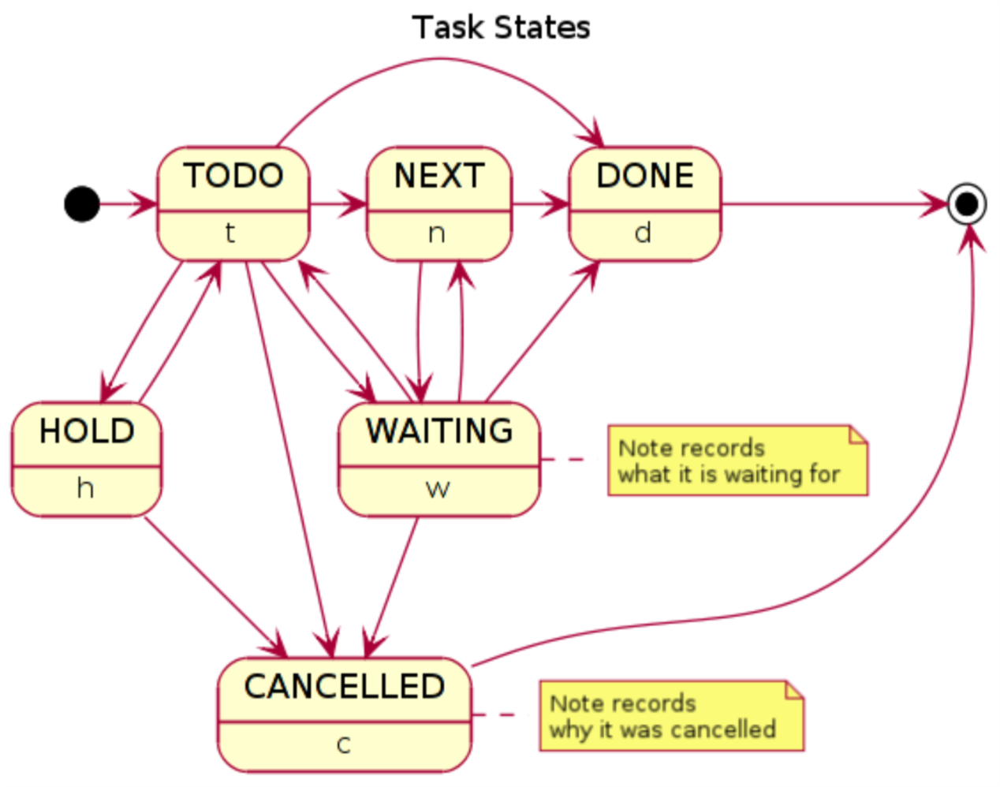
Figure 3: state transitions for a task in my workflow
The main features are listed below.
- Every moment, for the sake of clearing my head, I capture all the ideas or some todos jumping into my head during my handling one event. I will handle the capture later.
- Every morning, I check the my agenda which is generated by a combination of ten commends.
- I check the scheduled tasks and the tasks which is near the deadline.
- After the scheduled one and the deadlined one, I take a
NEXTtask, which is inNEXTstatus. Also, I start a clock under such task. - After finishing the
NEXTtasks, theNEXTstatus will be changed toDONEautomatically. Then I pick a new task in theTODOlists and change theTODOstatus intoNEXT. Everytime I change aTODOtask into aNEXTtask, clock is running under that task automatically. - After finishing all the
TODOtasks, I check theDONElist to see if there is any tasks need to be archived.
2.2.3 some preparations
In order to run the GTD, some preparations are needed.
- set the agenda file
To use Org as a GTD tool, the first thing is to setup the
org-agenda-files;;;set up the agenda files (setq org-agenda-files (list "~/zorg/Dropbox/base/zlife.org" "~/zorg/Dropbox/base/zwork.org" "~/zorg/Dropbox/base/zrefile.org" "~/zorg/Dropbox/base/zdiary.org" "~/zorg/Dropbox/base/ztimelog.org"))
As you can see, I put my configs into the Dropbox directory, so that my config will never lose even if I delete them from the local carelessly.
Notice that there is a file named "zrefile.org" which is the entrance of all my todos and some other captures. It plays as an inbox. Everytime I check this file and take actions to clean it. All this can be done in the agenda buffer, which I will explain later. To refile the items in the refile.org, I need to set up the refile targets.
- set the refile targets
(setq org-refile-targets (quote ( ("~/zorg/Dropbox/base/zwork.org" :maxlevel . 6) ("~/zorg/Dropbox/base/zlife.org" :maxlevel . 6) ("~/zorg/zcl.space/content_org/math.org" :maxlevel . 6) ("~/zorg/zcl.space/content_org/computer.org" :maxlevel . 6) ("~/zorg/zcl.space/content_org/telecommunication.org" :maxlevel . 6) ("~/zorg/zcl.space/content_org/life.org" :maxlevel . 6) ("~/zorg/zcl.space/content_org/tools.org" :maxlevel . 6))))
Notice that, besides the zwork.org and zlife.org which are the agenda files, there are other five org files. These five org files are for my personal blog. Sometime, I capture a draft or outline of a new post in the zrefile.org, so I need to refile these drafts into the right category.
To understand why I add these extra five org files as the refile targets, you need to see my
org-capture-templates - set the org capture templates
(setq org-capture-templates '( ("t" "todo" entry (file "~/zorg/Dropbox/base/zrefile.org") "* TODO %? :TODO: \n Added:%T\n" :clock-in t :clock-resume t) ("h" "Hugo post") ("hm" "Math" entry (file+olp "~/zorg/zcl.space/content_org/math.org" "Math") (function org-hugo-new-subtree-post-capture-template) ":math:" :clock-in t :clock-resume t) ("hc" "Computer" entry (file+olp "~/zorg/zcl.space/content_org/computer.org" "Computer") (function org-hugo-new-subtree-post-capture-template) :clock-in t :clock-resume t) ("ht" "Telecommunication" entry (file+olp "~/zorg/zcl.space/content_org/telecommunication.org" "Telecommunication") (function org-hugo-new-subtree-post-capture-template) :clock-in t :clock-resume t) ("hl" "Life" entry (file+olp "~/zorg/zcl.space/content_org/life.org" "Life") (function org-hugo-new-subtree-post-capture-template) :clock-in t :clock-resume t) ("ho" "Tools" entry (file+olp "~/zorg/zcl.space/content_org/tools.org" "Tools") (function org-hugo-new-subtree-post-capture-template) :clock-in t :clock-resume t) ("hm" "movie" entry (file+olp "~/zorg/zcl.space/content_org/all-posts.org" "Movie") (function org-hugo-new-subtree-post-capture-template) :clock-in t :clock-resume t) ("hl" "life" entry (file+olp "~/zorg/zcl.space/content_org/all-posts.org" "Life") (function org-hugo-new-subtree-post-capture-template) :clock-in t :clock-resume t) ("l" "my Log Time" entry (file+datetree "~/zorg/Dropbox/base/ztimelog.org" ) "** %T - %? :timelog:" :clock-in t :clock-resume t) ("d" "diary" entry (file+datetree "~/zorg/Dropbox/base/zdiary.org" ) "* %t - %? :diary:" :clock-in t :clock-resume t) ("x" "org-protocol" entry (file "~/zorg/Dropbox/base/zrefile.org") "* TODO Review %c \n Added:%T\n") ))
I have a template for
zrefile.orgwhich is :("t" "todo" entry (file "~/zorg/Dropbox/base/zrefile.org") "* TODO %? :TODO: \n Added:%T\n" :clock-in t :clock-resume t)
To understand the meaning of this template, you need to read the doc for variable
org-capture-templates.whenever I check the org-agenda, I will see a block contains all the need-to-refile tasks. So you may curious about my set of
org-agenda-custom-commands - set the org agenda custom commands
(setq org-agenda-custom-commands (quote ( (" " "Agenda" ((agenda "" ) (tags "NOTES" ((org-agenda-overriding-header "NOTES to Refile") (org-tags-match-list-sublevels nil))) (tags "REFILE" ((org-agenda-overriding-header "Tasks to Refile") (org-tags-match-list-sublevels nil))) (tags-todo "-CANCELLED/!" ((org-agenda-overriding-header "Stuck Projects") (org-agenda-skip-function 'bh/skip-non-stuck-projects) (org-agenda-sorting-strategy '(priority-down category-keep)))) (tags-todo "-HOLD-CANCELLED/!" ((org-agenda-overriding-header "Projects") (org-agenda-skip-function 'bh/skip-non-projects) (org-agenda-sorting-strategy '(priority-down category-keep)))) (tags-todo "-CANCELLED/!NEXT" ((org-agenda-overriding-header "Project NEXT Tasks") (org-agenda-skip-function 'bh/skip-projects-and-habits-and-single-tasks) (org-tags-match-list-sublevels t) (org-agenda-sorting-strategy '(priority-down todo-state-down effort-up category-keep)))) (todo "TODO" ((org-agenda-overriding-header "Project Subtasks TODO") (org-tags-match-list-sublevels t))) (todo "DONE" ((org-agenda-overriding-header "Project Subtasks DONE") (org-tags-match-list-sublevels t))) ;;;;(tags-todo "-CANCELLED+WAITING+HOLD/!" (todo "HOLD" ((org-agenda-overriding-header "Waiting and Postponed Tasks") (org-agenda-skip-function 'bh/skip-stuck-projects) (org-tags-match-list-sublevels nil) (org-agenda-todo-ignore-scheduled 'future) (org-agenda-todo-ignore-deadlines 'future))) (tags "-REFILE/" ((org-agenda-overriding-header "Tasks to Archive") (org-agenda-skip-function 'bh/skip-non-archivable-tasks) (org-tags-match-list-sublevels nil)))) nil))))
You should never copy the above snippet, because there are some functions whose definitions are not contained in the snippet. Actually, you should go to my Github page to get the repository if you are interested in my .spacemacs.d
According to the command, one of the sample of my org agenda may look like:
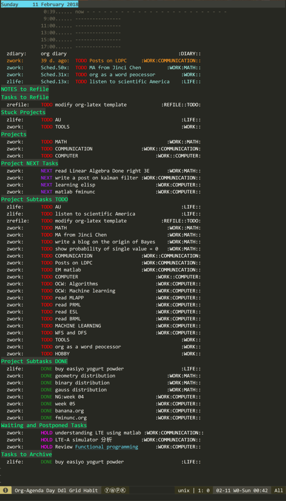
Figure 4: my org agenda sample
I have three projects: math,computer and communication (telecommunication). For each projects, there are some tasks. All the projects appear as level-1 headlines in the org file and the tasks appear as sub-level headlines. If all the tasks under one project are in
TODOstate, the project is stuck. If at least one of the task under one project is inNEXTstate, the project is running.I think the structure of my agenda buffer is straightforward. you can define your own
org-agenda-custom-commandsby reading the manual and this post.
2.2.4 One day based on my workflow
- Punch In
At the beginning of every day, I use
F8 Ito punch in, which starts a clock under a task called Organization:(defvar bh/organization-task-id "eb155a82-92b2-4f25-a3c6-0304591af2f9")
- check out the agenda
Check out the agenda, using
org-agendawhich is bound toSPC a o o SPCorSPC o a SPCorF5 SPC. Because theorg-agendabuffer will be visited quite a few times, I bind this command to several shortcuts. Using the customed commandSPC, I collect all the projects, tasks withTODOandNEXTstates in the project which give me an overview of what should be done next and what should be started next.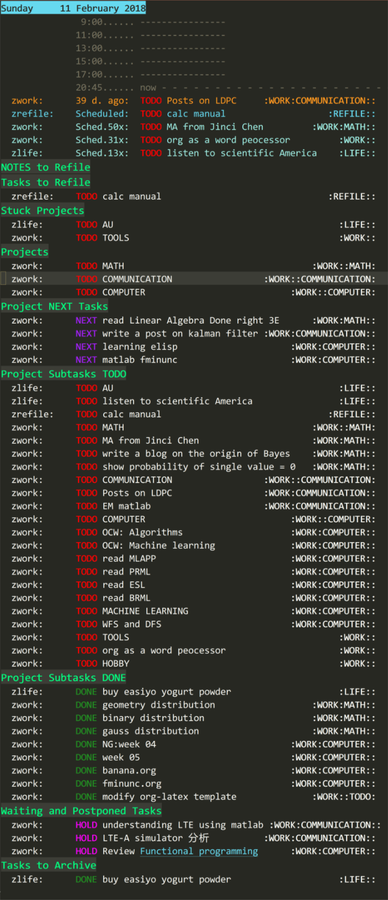
Figure 5: my org agenda overview
As we can see from the screenshot, the agenda of today is listed at the beginning with scheduled task and deadline task.
Following today's agenda, several blocks are displayed with each headline in green color and large font size. Those blocks shows:
- Notes to Refile, which is the draft of a post which should be refile to math.org computer.org or telecommunication.org.
- Tasks to Refile, which is the Ideas or tasks hitting my head during handling one tasks. I store these tasks in zrefile.org then process them later after finishing current tasks.
- Stuck Projects, which are the projects have no sub-tasks in
NEXTstate. - Projects, which are the projects have at least one sub-tasks in
NEXTstate. - Project Next Tasks, which are
NEXTsub-tasks in all Projects. In particular, you can filter out theNEXTtasks belonging to certain project. - Project Subtasks TODO, which are all the
TODOsub-tasks belonging to all projects. - Project Subtasks DONE, which are all the
DONEsub-tasks belonging to all projects. - Waiting and Postponed Tasks, which are all the tasks in
WAITINGandHOLDstate. - Tasks to Archive, which are the tasks being tagged as
DONEfor a period and need to be archived.
- focus on certain project
If you have many
TODOtasks, it is desirable to focus on certain project at one time. Just move the cursor on the Project you want to focus, then press^. If you want to focus on another project, press^again then select another project, press^.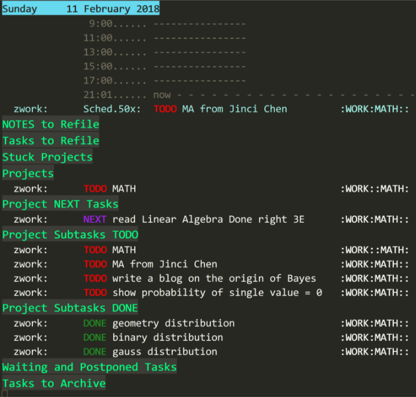
Figure 6: focus on certain project
Actually, there are quite a few commands helping you coin your own view of the agenda buffer. some handy are listed below:
Table 1: some handy agenda commands shortcuts command description /org-agenda-filter-by-tag Filter the agenda view with respect to a tag <org-agenda-filter-by-category Filter the current agenda view with respect to the category of the item at point ^org-agenda-filter-by-top-headline Filter the current agenda view and only display the siblings and the parent headline of the one at point =org-agenda-filter-by-regexp Filter the agenda view by a regular expression _org-agenda-filter-by-effort filter the agenda view with respect to effort estimates You can find more agenda commands by reading
Agenda viewspart of the Org manual which is built in the Emacs. - change the state of one task
It is quite easy to change the state of one task. By default, the state is in
TODOstate. After start clocking the task, the task will be inNEXTstate automatically.From
NEXTto other state, you just useC-c C-t. If you are in the org agenda buffer, presstone the line of the task.Once the task is set as
DONE, a temporary buffer will jump out and let you take some note to record the task. - using the mobile phone to take capture
In general, there are two app one is
Org-mobileand the another one isBeOrg. I prefer to the later because of is easy to use. All you have to do is put your agenda files in a Dropbox directory.Org-mobileis kind of complex, and need to config both on the phone and the PC. I finally make it run on both my iPhone and Surface pro 4. However, I resort toBeOrgbecause you will never forget how to useBeOrg. Unfortunately, I forget how to useOrg-mobileafter I did not use it for a month.
2.2.5 conclusion
My GTD workflow based on Org is summarized. To be honest, I change my workflow quite often. So the configuration will change subsequently which is the source of joy using Emacs. You can always config it as handy as possible.
2.3 Using Emacs as a calculator through Cals
2.3.1 Introduction
In Emacs, execute M-x calc and you are in a Calc buffer. At first
time, perhaps you will be confused how begin. Press ? you will get a
help manual.
Normally, Calc uses the RPN (Reverse Polish Notation) notation, which is not the natation what I am familiar with. However, It did not take me much time to get used to it. Generally, the core of an RPN calculator is the stack. A calculator stack is like a stack of dishes. New dishes are added at the top of the stack, and numbers are normally only removed from the top of the stack. Also, in a RPN calculator, operands are always entered first, the operator second. The calculator pops the appropriate number of operands from the stack and pushes back the result.
Take 2+3 for example, first, you enter 2;second , 3; at last, you
enter + . Then the 2 and 3 pops from the stack and 5 are pushed on
the top of the stack.
2.3.2 Main Features
- Choice of algebraic or RPN entry of calculations;
- Arbitrary precision integers and floating-point numbers.
- Arithmetic on rational numbers, complex numbers (rectangular and polar), error forms with standard deviations, open and closed intervals, vectors and matrices, dates and times, infinities, sets, quantities with units, and algebraic formulas.
- Mathematical operations such as logarithms and trigonometric functions.
- Programmer's features (bitwise operations, non-decimal numbers).
- Financial functions such as future value and internal rate of return.
- Number theoretical features such as prime factorization and arithmetic modulo m for any m.
- Algebraic manipulation features, including symbolic calculus.
- Moving data to and from regular editing buffers.
- Embedded mode for manipulating Calc formulas and data directly inside any editing buffer.
- Graphics using GNUPLOT, a versatile (and free) plotting program.
- Easy programming using keyboard macros, algebraic formulas, algebraic rewrite rules, or extended Emacs Lisp.
From the features listed above, we can see Calc is a versatile calculator. It is almost impossible for me to touch all the features during daily use. Calc is large and maybe intimidating to the first-time user. My knowledge of Calc grows as time goes by. I use Calc every time when I want to calculate something. Day by day, I learn more and more about Calc.
This post is the record of my use of Calc.
2.3.3 switch between the algebraic and RPN mode
calc-algebraic-entry
This command is used to input an expression in the algebraic mode
temporally. After this the Calc is in RPN mode. When you execute
the calc-algebraic-entry the minibuffer will be leading by the
word Algebraic: instead of Calc:, which is used in the RPN
mode.
After the Algebraic: you can enter your algebraic expression.
In the Calc buffer, press ' also bring you the algebraic mode.
Press ' two times bring you the last algebraic expression you
entered.
calc-algebraic-mode
This command will turn the Calc into algebraic mode. After calling
this command, every time you enter something in the Calc buffer,
the Calc is in the algebraic mode i.e. every time you enter
something , the minibuffer will be leading Algebraic: . So any
algebraic expression is accepted. I even try the 2 + log10(100)
and it returns 4 .
2.3.4 adding two numbers
In the RPN mode, you enter the first operand and the second
operand, at last you enter + , then the first operand and the
second operand pops out of the stack and the result is pushed
back.
subtraction, multiplication and divide are in a straightforward way.
2.3.5 reference
2.4 Write in Emacs
2.4.1 writing a book in Emacs
I am not going to preach the powerful tool, Org. In this post, I want to write something on the tools which facilitate the literature writing. Indeed, if I am going to write a book someday (when time is not a problem), the very tool I will adopt definitely is Emacs.
With high probability, I will adopt the workflow like Mickey Petersen
did. Also, Emacs has many extensions that make writing a book or an
article in large size possible. In general, I will write it in Org
mode, and export the book to other format with just a C-c C-e, which
is a convenient shortcut memorized by my muscle.
2.4.2 Extensions that facilitate writing
- Working Environment
My working Environment is listed as below:
- Windows 10 on Surface Pro 4;
- Emacs 25.0.5;
- Org 9.1.6;
- Also, I use spacemacs, a comprehensive configuration with many functions organized as layers.
- Org
The Org mode, the killer extension, makes Emacs great again. I surely did quite a few customization on Org. However, I use the org layer shipped with spacemacs.
Also, you can configure Org like a word processor. Org-bullet package make Org mode beautiful. I set Org bullets as:
(setq org-bullets-bullet-list '("✿" "❀" "♣" "♧" ))
As mentioned before, you can export your Org file using several formats such as HTML,TeX, PDF, Markdown and so on.
I use Org writing my own blog through ox-hugo. Of course, I use Hugo. Why not? Hugo is fast and disk-space-friend. Hugo also has its windows distribution. ox-hugo export the org files as markdown files which are supported by hugo.
I use Org to export PDF based on the latex class defined org-article ,which is a latex class I forked from tsdye/org-article and added the support for Chinese characters. Org-article is a flexible latex class and export beautiful PDF with the good-looking fonts and architecture.
- Spell Checking
Using flyspell, spell checking is easy. There is a layer named spell-checking distributed with spacemacs.
I use aspell instead of ispell. So, I set:
(setq-default ispell-program-name "C:/Aspell/bin/aspell.exe")
Of course, you have to install aspell and the dictionaries. I use the Win32 version.
Using flyspell mode, you can also insert some word into your personal dictionary.
- Moving around
Using Spacemacs, moving around is easy because it has almost all the jumping shortcuts used in Vim (if you use the Vim mode in spacemacs).
On the other hand, using Org, you can jump from headline to headline easily. Promoting and demoting a headline is also fast. You can even change the head level of a headline using just a few keystrokes.
The
tabkey is a useful shortcut to change the face of how the Org buffer looks like. I use thetabkey to give me a sketch view of the post I am working on. Furthermore, you can even use the narrow function to restrict the buffer showing only the section of subsection part you are working if your file is getting large and you don't want to be distracted by other parts of your article.Through the writing of this post, I also using the commands moving around sentences and paragraphs often.
Table 2: move around in Org files commands description h,j,k,lthe basic Vim keys, need no description 0goto the beginning of a line $goto the end of a line M-agoto the beginning of a sentence M-egoto the end of a sentence M-kmove a paragraph up when cursor stays in a paragraph M-jmove a paragraph down when cursor stays in a paragraph M-{goto the beginning of previous paragraph M-}goto the beginning of next paragraph In the Org mode, the following commands are also very convenient.
M-jorg metadown when cursor stays in a headline M-korg metaup when cursor stays in a headline <promote a headline when cursor stays in a headline >demote a headline when cursor stays in a headline C-c C-fgoto the next headline of the same level C-c C-bgoto the previous headline of the same level C-c C-ngoto the next headline, not necessarily the same level C-c C-pgoto the previous headline, not necessarily the same level - count words
count-wordsis a command built in Emacs. There is a github repository "advance words count" which helps count the CJK word. If you write in CJK language, it will be handy. - focus on current section
Three handy functions help me focus on what I am working on.
- the fullscreen
spacemacs/toggle-fullscreen-framewhich block distractions from other apps. - the org-capture which allow me capture the ideas or aspirations hitting my head.
- the narrow function. This is extremely useful especially when your article or post have quite a lot sections. You can narrow your buffer to the very section you are working on.
- the fullscreen
2.4.3 Reference
- how-to-write-a-book-in-emacs
- Emacs for writing ? Tell me your tricks !
- My Emacs Writing Setup . This is an old post by Tony Ballantyne, a writer, whose blog http://tonyballantyne.com/ provides a lot of information on how to write.
- On irreal.org , you can always find something unexpectedly.
- An Absolute Beginners Guide to Spacemacs for Academic Writing . This post is a comprehensive guide for beginners using spacemacs. I learn quite a lot from it.
- Pandoc, the swiss-army knife for file format conversion.
2.5 Version Control Using Magit in Spacemacs
There is an official layer called gitbuiltin spacemacs. The git
layer is based on magit . Actually, on the magit website, you can
always find what you want. This post is a summary of How I use magit
in spacemacs.
I like the magit website because of the beautiful font and pleasing color combination. More important is the maintainor Jonas Bernoulli who devotes his yearly efforts to coin the magit great for Emacsers. Now, after a successful campaign on the Kickstarter, Jonas Bernoulli was able to work on Magit full-time for another year, which was he'd love to.
Lets's goto my daily use of Magit in Spacemacs. If you are not using Spacemacs, I highly recommend it for you.
2.5.1 Commit Your Changes
Suppose you have already make some changes on a project version controlled using Git, the next step is to stage the changes and then commit the changes.
If your cursor are in the buffer of a file belonging to that project,
press SPC g s will bring you to the magit buffer of current project.
If your cursor are not in the buffer of a file belongint to that
project, using SPC p p goto the helm-projectile buffer, then move
cursor to the project, then press M-g, you will goto the magit
buffer of current project.
Taking my .spacemacs.d project for example, after some modifications
on the config, I want to commit the changes. The mentioned two ways
bring me to a magit buffer like this:
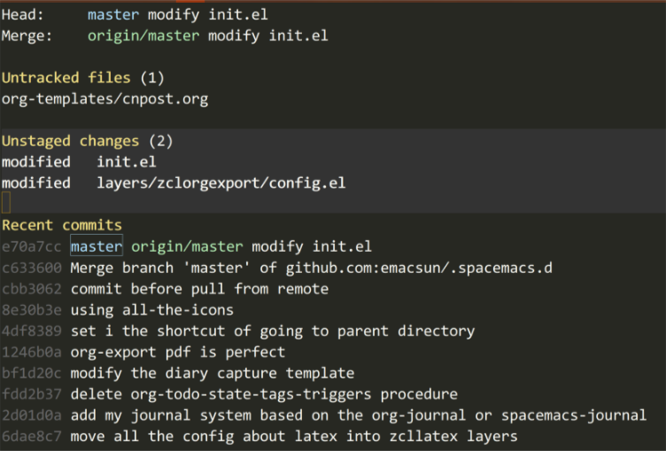
Figure 7: magit buffer of my .spacemacs.d
From the above buffer, it records that I have one untracted file and
two unstaged changes on two existing files. On the headlines of the
untracted files and unstaged changes, press s will stage all the
untracted files and unstaged changes. If you are not at the headlines,
to stage all the changes you need to press S. After this, the buffer
become:
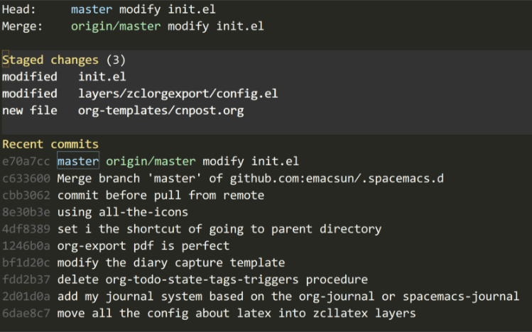
If you regret, press u to unstage the changes. If you want to
commit, just press c, you will get a menu.
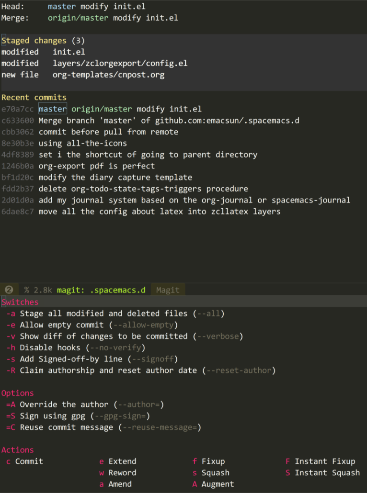
Figure 8: press c to commit
The menu is clear for you to choose. If nothing to change, just press
c again, and there will a buffer pop up for you to take some notes
on this commit. Also, there is a buffer showing the diff of this
commit. If you regret at this moment, just press C-c C-k to abort
the commit.
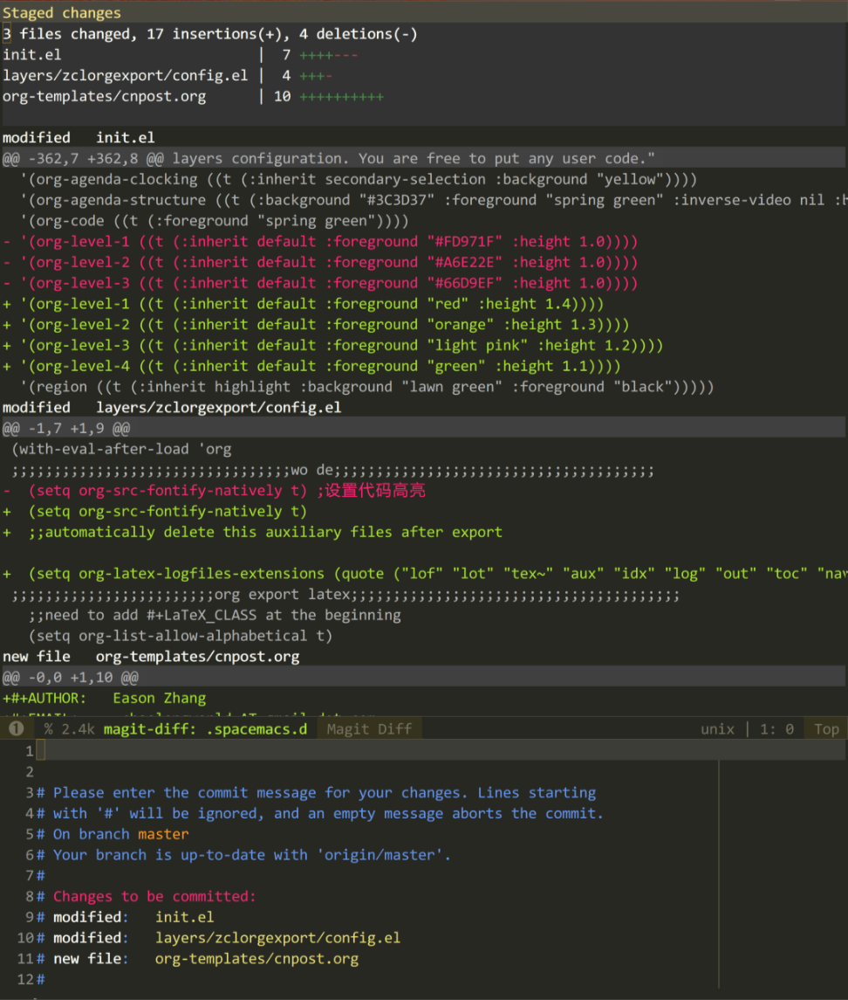
Figure 9: press c to commit
After finishing the notes, press C-c C-c to finish the commit. you
are in a buffer showing the current state of the project.
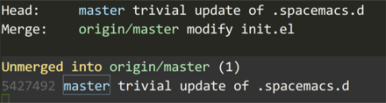
Figure 10: after commit
It shows that I am ahead one commit of the remote/master. So, If you
want to push the commit to the remote/master, press p , a buffer
will popup for you to choose where to push.
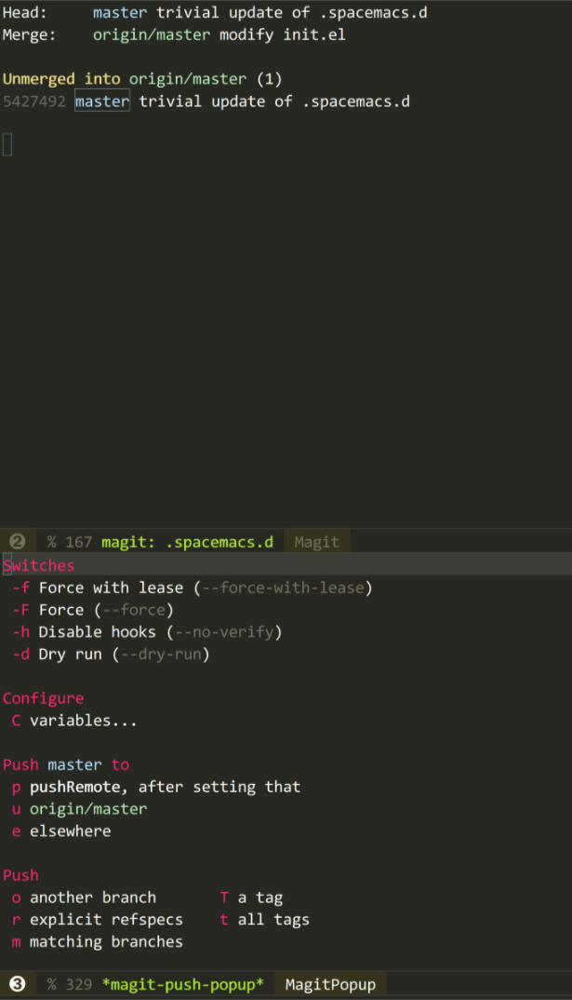
Figure 11: press u to push
Press u to push the commit to the origin/master, and you get:
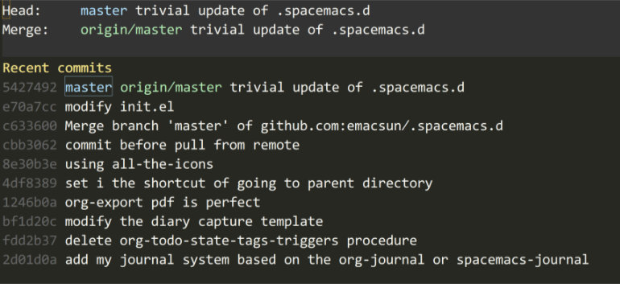
Figure 12: after pushing to the origin/master
Then a commit is finished locally and remotely.
2.6 Journal your life Using Emacs Org
2.6.1 Introduction
Long time ago, I read a post about taking daily journal using Emacs. Until recently, I realized that I need to take journals on my work. So I read the post again and integrate the configuration into my .spacemacs.d.
In general, I use this journal system to note down my work. This journal system is simple and easy to use and maintain.
Here, I am not going to preach why you should keep a daily journal. Google will tell you more.
2.6.2 Install
If you want to Install the org-journal layer, just clone my
.spacemacs.d there is a layer named zcljournal, which is forked
from spacemacs-journal with a little modified.
To use this journal system, you need set org-journal-dir:
(setq org-journal-dir "~/.spacemacs.d/journal/")
2.6.3 Keys
- Global Bindings
Key Binding Description SPC a j jnew journal entry SPC a j vview journal of today SPC a j ssearch journals within a specified time interval SPC a j Ssearch all journal for a string - Major Mode Bindings
Key Binding Description SPC m j jnew journal entry SPC m j nnext journal file SPC m j pprevious journal file SPC m j ssearch the current journal file SPC m j vread journal entry SPC m j Vdisplay journal entry SPC m j Ssearch all journals SPC m j wsearch calendar week SPC m j msearch calendar month SPC m j ysearch calendar year Also, you can replace the prefix
SPC mwith,which is more handy. - Calendar Mode Bindings
Key Binding Description J jnew journal entry J vview an entry in a new buffer J Vview an entry but do not switch to it J ngo to next day with journal entries J pgo to previous day with journal entries J Ssearch in all entries of all time J wsearch in all entries of the current week J msearch in all entries of the current month J ysearch in all entries of the current year
2.6.4 Take a Journal
After setting, you can take journal anywhere and anytime. In the
buffer not in Org mode, SPC a j j will generate and new
journal entry. In Org mode, SPC m j j or , j j will also
bring a new journal entry.
2.6.5 Browse Your Journal
To browse your journal, you'd better in the Calendar buffer using
calendar which I bind to SPC o C . In this buffer, press J
there will be a menu popping up for you.
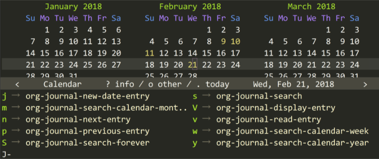
As you can see, the day with a journal is highlighted in yellow ( you can custom it to other colors ).
| keys | description |
|---|---|
J n |
jump to next day having a journal |
J p |
jump to previous day having a journal |
J v |
display journal of current day |
2.6.6 Search Your Journal
The key I use most is org-journal-search-forever which I bind to
SPC a j S and you can search all your journals anytime and
anywhere. You can also search a certain period by SPC a j s
with which you need to enter the begin and end of the period in
the minibuffer.
There are other search options which allow you search in a week, month and a year. However, to search your journal in a week, a month and a year, you need in the Calendar buffer.
2.6.7 After a Period
After a Period, say a month, there are quite a lot journals under
the org-journal-dir . One day One journal.
2.7 Take a Diary Using Emacs Org
2.7.1 Introduction
There is one diary system built in Emacs. When you are in the
Calendar buffer, press i will bring you a menu to select what
kind of diary you want to take. However, as a loyal fan of Emacs
Org, I want to take diary using Org.
When I am in the org agenda buffer, press i will bring me a menu
like what show in the calendar buffer after pressing i.
2.7.2 Set up
It seems that all you need to do is set the org-agenda-diary-file,
so that Org knows where to put the diary file.
(setq org-agenda-diary-file "~/zorg/Dropbox/base/zdiary.org")
After this, everything is left for Org mode. All you have to do is writing your diary.
2.8 Extends Emacs Org Mode on iOS Device
I use two APPs BeOrg and Drafts as Org's extension on my iOS device. Oh, almost foget it. Another one: dropbox. Beorg and Drafts stores the captures of ideas into dropbox. I retrive them when I am home on Windows 10 using my Surface Pro.
The relationship among all the APPs I mentioned above is like
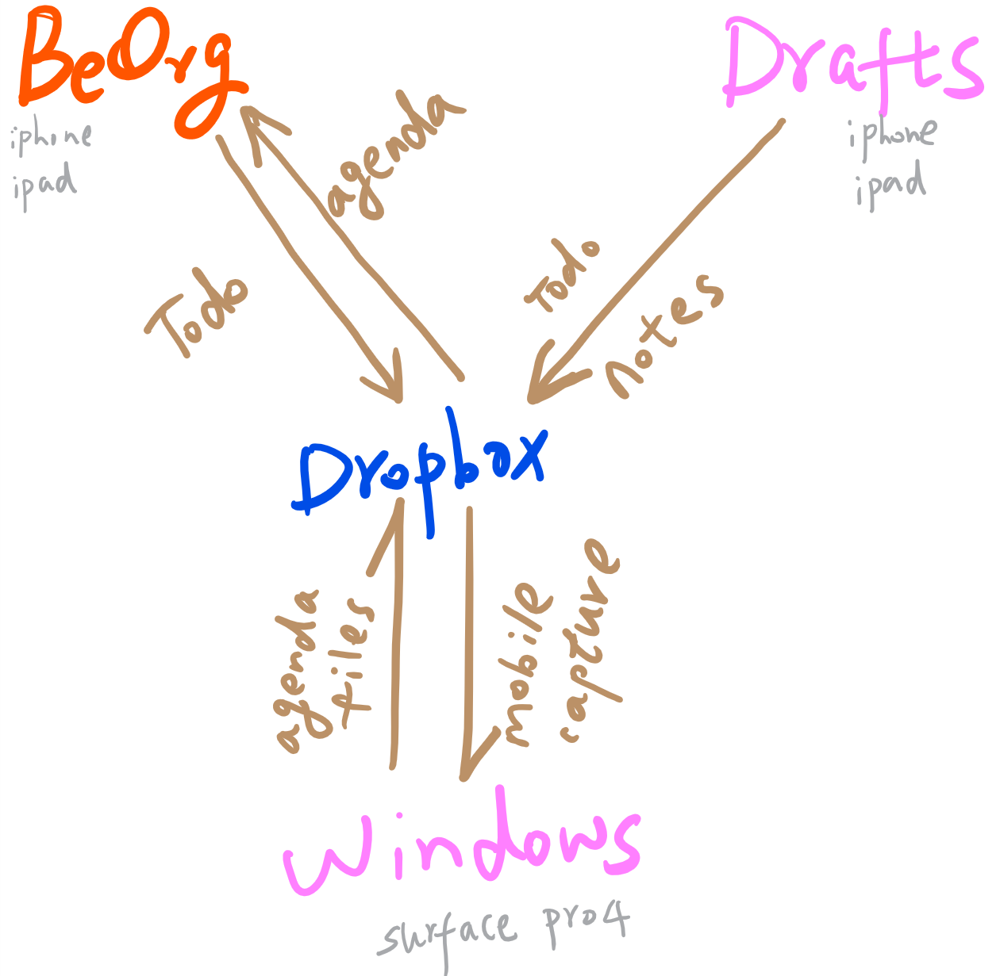
Figure 13: My using of Org mode through mobile device
Actually, I also tried another APP named MobileOrg, but dislike it because of its inflexibility ,boring GUI and hard-to-config. The combination of Beorg and Drafts works well for me with their playing each's own role.
2.8.1 BeOrg
Using BeOrg, I only capture a TODO. I leave capturing a note to Drafts which is good at notes.
One screenshot of Beorg is shown as:
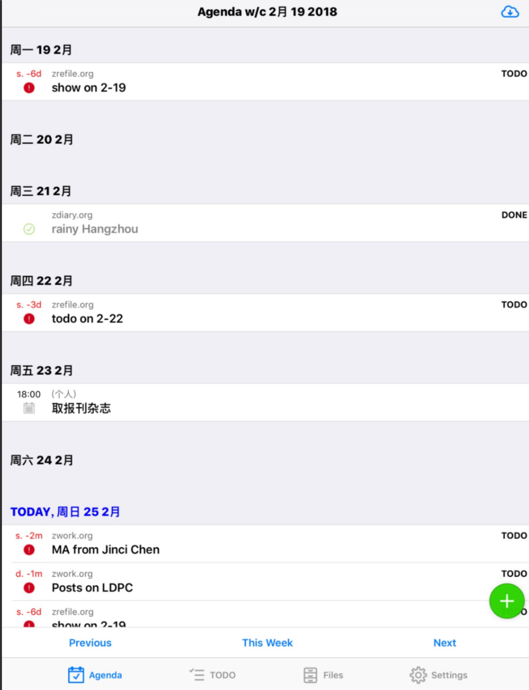
The green button is used to add a todo capture. As you can see, Beorg can also read the todos from your iOS calendar (I am sorry for whom cannot read Chinese. That item in Chinese comes from iOS calendar reminding me to pick up the magazines and newspaper).
By default, Beorg display the week agenda. The TODO states are also can be customized. I set the file synchronization method as dropbox and set the org directory which is shared with Drafts and my windows. So I can keep the org files consistent.
Beorg also has an option for quick capture. Naturally, I also set it as the inbox of my Org mode on Drafts and Windows. You can also control the vivibility of your iOS calendars, i.e. which part shoule be integrated into BeOrg agenda view, the family? personal? work? You name it, as you wish.
2.8.2 Drafts
Drafts is the most efficient tool for taking a note. All you need is to focus on writing. Furthermore, you can even export your notes to way many other APPs such as evernote, markdown, oneDrive, google drive and so on. There are tons of commands available on the action directory of Drafts.
Combined with dropbox, I config several commands of my own. One screenshot is like:
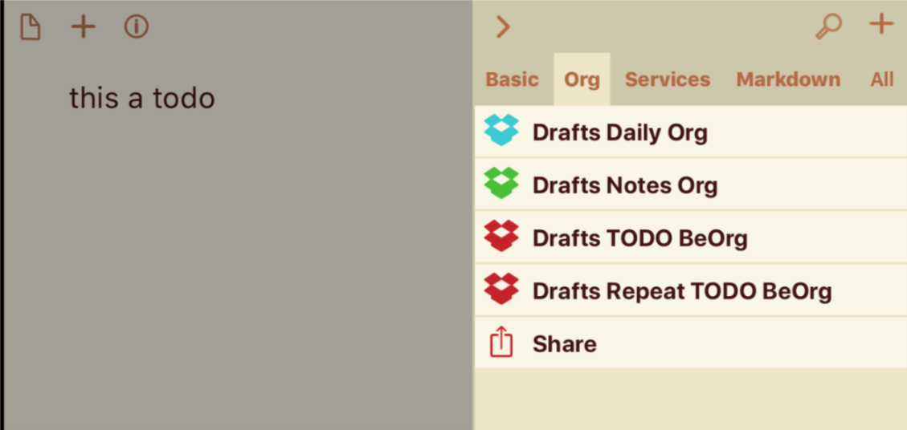
Take my command Drafts TODO BeOrg for example, the step is append
files on Dropbox and the content is shown as:
* TODO [[title]] SCHEDULED: <[[created|%Y-%m-%d %a]]> [[body]]
Notice that, I set the format of creating timestamp the same as Emacs Org so that Emacs Org can follow the todo from Drafts.
Of course, you can define your own command in Drafts just read the document.
2.8.3 Dropbox
The configuration of Dropbox is easy. All you have todo is to put the org files in a directory where Beorg, Drafts and Windows knows.
2.9 Repeated Tasks in Emacs Org
Timestamps in Emacs Org are easy. Setting timestamps for repeated tasks are more interesting. It is quite often in daily life that some tasks will be repeated day by day, such as having lunch and afternoon nap, taking exercise. Org has a repeater in a task with a deadline or scheduled.
2.9.1 Repeater in Org
**TODO take a noon nap DEADLINE:<2018-03-04 Sun 12:30 +1d>
+1d is a time repeater. The task take a noon nap is intened to be done
every day at 12:30. The interesting part is that everytime the state
of the task is changed from TODO to DONE. The task will be changed to
TODO again with the timestamp changed for the next day automatically.
For the user, you will never see the DONE state. The task with a
repeater is always in TODO state.
The d in +1d means day. In a straightforward way, it can be h for
an hour, w for a week, m for a month, y for a year.
Deadlines and scheduled items generate an agenda item. If you want to be warned before a period you can add a warning period in the timestamp.
**TODO take a noon nap DEADLINE:<2018-03-04 Sun 12:30 +1d -10m>
-3h means that the task will appear ten minutes before 12:30. For a
traditional task with a TODO having a deadline or scheduled time, once
it was done, the item will disappear from the agenda. However, for a
task with a repeater, Org will increase the date of the timestamp by
the interval indicated by the repeater then set the task to TODO state
immediately. The task will appear in all the agenda from the timestamp
on.
2.9.2 a special repeater
For +1d the repeater will always adding one day every time you change
the task from TODO to DONE. However, for the task like taking a nap,
having a deadline at 2018-03-04, if you forget to change it from TODO
to DONE on 2018-03-04 and you do this on 2018-03-05, The timestamp
will not change to 2018-03-06. It will be 2018-03-05, this is werid
because you have already done the task on 2018-03-05. You have to
chage the task from TODO to DONE again so that the deadline timestamp
will be 2018-03-06.
For the scenario mentioned above, Org has repeaters with a special
format ++ and .+ .
**TODO take a noon nap DEADLINE:<2018-03-04 Sun 12:30 ++1d>
With ++1d the deadline of a repeated task will always be tomorrow
everytime you change the state from TODO to DONE even you forget to
finish it several times.
Actually, this kind of task is quite common in daily life. Taking calling your father weakly for example, if you forget to call him three weeks, it is impossible to call him three times in a week to make things up.
2.9.3 the .+ repeater
Similar with ++ , .+ will shift the date to the future after today .
Take the following task for example,
**TODO pay the telephone fee DEADLINE: <2018-03-04 Sun 09:17 .+1m>
If you finish this task on 2018-03-01, Org will shift the task like:
**TODO pay the telephone fee DEADLINE: <2018-04-01 Sun 09:17 .+1m>
2.9.4 repeated period
Sometimes, you know how long the repeated task will last. Take the noon nap for example, usually I will set up a alarm to wake me up half an hour later. So, I can set the task with repeated period instead of repeated timestamp.
So the noon nap event will be like:
**TODO take a noon nap SCHEDULE:<2018-03-04 Sun 12:30-13:30 ++1d>
This will schedule a noon nap every day from 12:30 to 13:00.